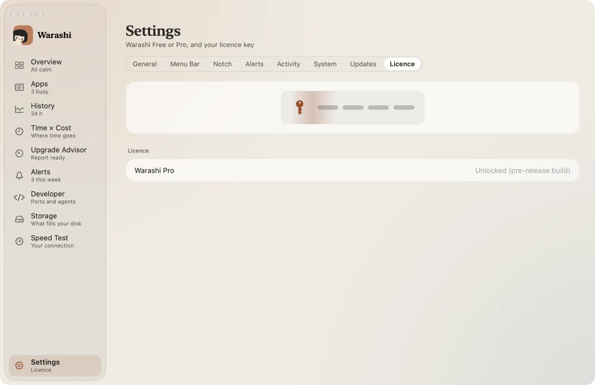
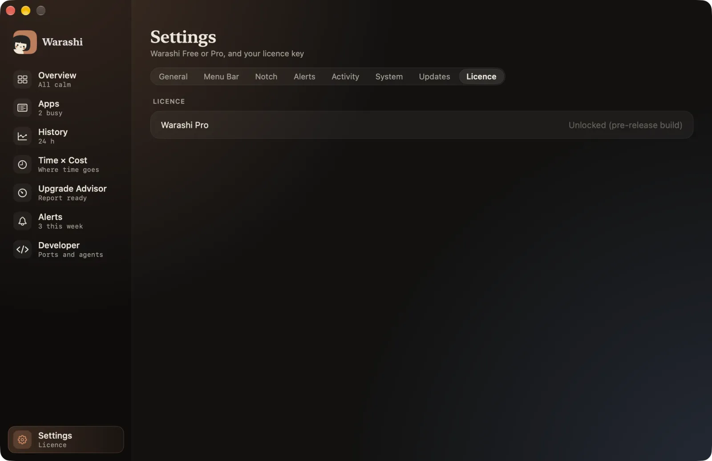

O Warashi está em um beta público gratuito: todas as versões numeradas 0.x. Obrigado por experimentá-lo desde cedo.
Durante o beta
- Tudo fica desbloqueado e gratuito, em quantos Macs você quiser.
- As atualizações chegam automaticamente, então você sempre tem o beta mais recente.
- Ajustes › Licença mostra Desbloqueado (versão de pré-lançamento).


Quando o Warashi 1.0 chegar
- O beta termina
Quando a 1.0 for lançada (e em 1º de março de 2027 no máximo), o beta para de medir. A janela da barra de menus e a janela principal mostram O beta terminou.
- Atualize para a 1.0
Clique em Atualizar para Warashi 1.0. O Warashi 1.0 é uma compra única, sem assinatura, para até dois Macs.
- Insira sua licença
Depois de comprar, insira sua chave de licença em Ajustes › Licença. Seu histórico do beta continua lá.
Bom saber: seu histórico nunca é apagado quando o beta termina: ele fica no seu Mac, pronto para a versão 1.0.